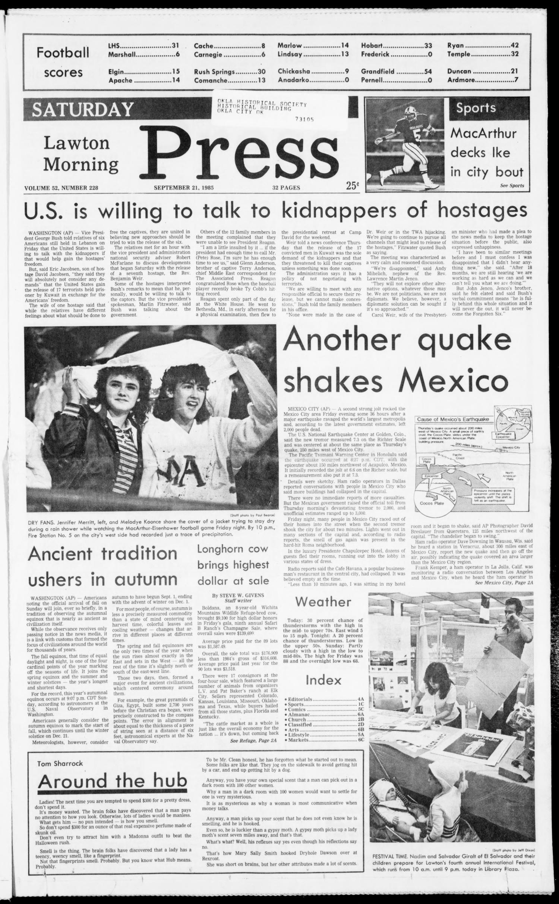

HN HN-754 · September 21, 1985 · Disasters, Accidents & Emergencies > Earthquakes & Volcanic Disasters > Earthquakes
Source: Banner-Graphic, p. 2 — original page; USGS 1985 earthquake archive.
Report: The headline now said at least 2,000 dead and described another strong shock measured at 7.3 by the cited source, along with collapsing structures and renewed fear.
Assessment: A later dispatch and a distinct aftershock, not two interchangeable magnitude estimates for the same event. The September 19 mainshock and subsequent shaking need separate timestamps, while the death toll continued to evolve beyond the first two days.
Authentic scans retrieved from Gateway to Oklahoma History (Oklahoma Historical Society). Article crops are located using the archive's own OCR word coordinates and rendered at native crop resolution; page scans are reduced-size access renditions. No images were generated, mocked, or retouched.

Not yet acquired. Queued for provider-specific acquisition testing (see source-acquisition manifest).
URL (preserved verbatim): https://newspapers.library.in.gov/?a=d&d=BG19850921.1.2
Saved research report: Historical_Newspaper_Event_Research_753-777_2026-10-23.md
Evidence note: A newspaper report means a historical publication made a claim; it does not establish that claim as fact. Contemporary reporting is separated from later scholarly context and our own assessment.